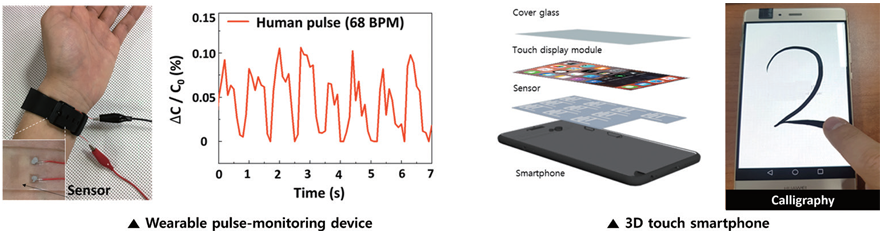

KAIST Top 10
KAIST Top 10
KAIST RESEARCH ACHIEVEMENTS
Industrial-grade Flexible Transparent Force
Touch Sensor
School of Electrical Engineering Jun-Bo Yoon
Summary
Force touch sensors are actively applied to various applications such as smartphones, robots, and wearable devices as it can provide various functions by recognizing pressure and position information. However, existing high-performance force touch sensors only improve specific performance aspects such as sensitivity and do not satisfy overall performance requirements for commercialization, which include sensitivity, flexibility, transparency, reproducibility, and reliability. As a result, existing high-performance force touch sensors are limited for commercialization. In this study, we developed an industrial-grade, high sensitivity, transparent, and flexible force touch sensor using coplanar electrodes and the stress concentration effect in a nanocomposite insulator and flexible nanograting substrate that satisfies all performance requirements for commercialization. In addition, the developed technology was confirmed to be applicable for various applications by successfully demonstrating it in a wearable pulse-monitoring device and a smartphone.
Background
Force touch sensors have received a great deal of attention for various applications ranging from practical smartphones to wearable devices as it can provide various functions by recognizing pressure and position information. To apply a force touch sensor to wearable devices, a number of companies and research teams focused on high sensitivity and flexibility by using micro/nanostructures. However, although existing high-performance sensors improve upon a specific performance aspect, such sensors are not able to satisfy the overall performance requirements for commercialization, which involves sensitivity, flexibility, transparency, reproducibility, and reliability in various use environments. Therefore, force touch sensors are limited for applications in various products.
For example, a piezoresistive sensor that uses the contact area change of a conductive microstructure according to an applied pressure can increase sensitivity but has issues in that it has low reliability for repetitive operation due to wear at the contact area. On the other hand, capacitive sensors that use porous insulators can improve upon the sensitivity and reliability of repetitive operation, but the technology has low transmittance due to optical refraction in the pores. It also undergoes performance-instability in bending situations due to the induced stress. Therefore, it is still a necessary task to develop industrial-grade force touch sensors that simultaneously improve upon all the performance requirements for commercialization.
 Fig. 1. Proposed flexible transparent force touch sensor and 7-inch sensor array
Fig. 1. Proposed flexible transparent force touch sensor and 7-inch sensor array
 Fig. 2. Wearable pulse monitoring device and calligraphy application demonstration of a smartphone integrated with force touch sensors
To overcome these issues, the research team focused on the development of non-air gap sensors to break away from the convention that force touch sensors need to have air-gaps between electrodes for high sensitivity and flexibility. The proposed non air-gap force touch sensor is composed of a transparent nanocomposite insulator containing metal nanoparticles that can maximize the change of dielectric constant according to pressure, and a nanograting substrate that can increase sensitivity by concentrating pressure. As a result, we succeeded in fabricating a highly sensitive transparent flexible force touch sensor that is mechanically stable against repetitive pressure. Furthermore, by placing the sensing electrodes on the same plane as the neutral plane, the force touch sensor is capable of detecting without altering performance, even when bending to the radius of the ballpoint pen. The proposed force touch sensor also satisfies commercial considerations in mass production such as large-area uniformity, production reproducibility, and reliability according to long-term use and temperature/humidity variations. Finally, the research team applied the developed sensor to a wearable pulse-monitoring device and detected a human pulse in real-time. In addition, the research team confirmed with HiDeep, Inc. that a 7-inch large-area sensor can be integrated into a commercial smartphone.
Expected effect
The proposed force touch sensor, which was developed with a simple structure and fabrication process, offers various performance enhancement methods required for commercialization and can be applied to various research fields. Furthermore, it is expected to have a major impact on user touch interfaces and wearable devices.
Research Outcomes
[Paper 1] J. Y. Yoo, M. H. Seo, J. S. Lee, K. W. Choi, M. S. Jo, J. B. Yoon “Industrial Grade, Bending-Insensitive, Transparent Nanoforce Touch Sensor via Enhanced Percolation Effect in a Hierarchical Nanocomposite Film.” Advanced Functional Materials 28, 1804721 (2018). (IF = 13.33)
[Paper 2] J. Y. Yoo, M. H. Seo, J. S. Lee, K. W. Choi, M. S. Jo, H. J. Song, J. B. Yoon “Maximizing Percolation Effect Using Sub-100 nm Nano-valley for High Performance Wearable Transparent Pressure Sensor”32nd IEEE International Conference on Micro Electro Mechanical Systems(MEMS) 2019.
[Patent ] We applied for 7 domestic patents and 2 international patents related to Paper 1 and 2.
[Press release]
- Paper 1 was reported in 27 domestic and international newspaper.
- Video abstract that introduces [Paper 1] was featured in Advanced Science
- Paper 1 was selected as a back cover image of the Advanced Functional Materials journal
[Award] Paper 2 received Outstanding Student Paper Award at the IEEE MEMS 2019 conference. This award goes to only 3 papers among 490 student papers (The first recipient in Korea).
[Award] We are discussing technology and collaboration with 4 international and domestic companies related to home appliances, smartphones, and shoes including the New Balance company.